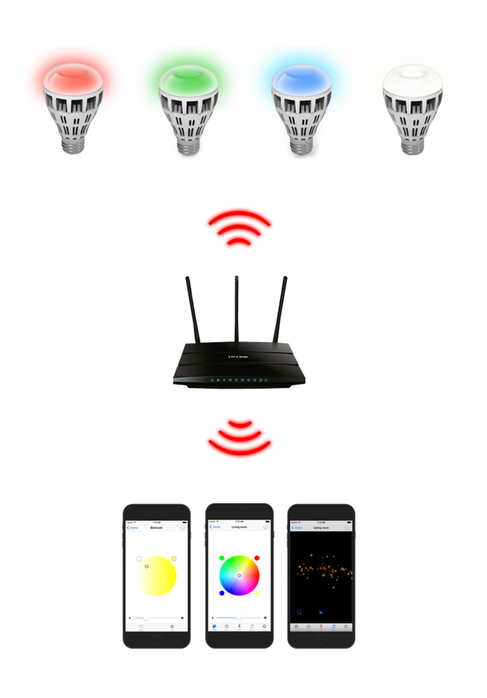
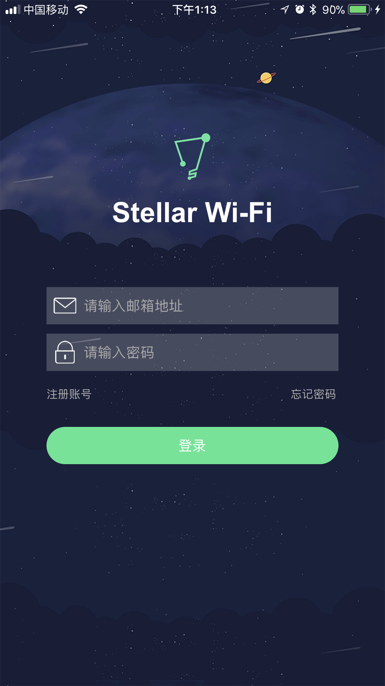
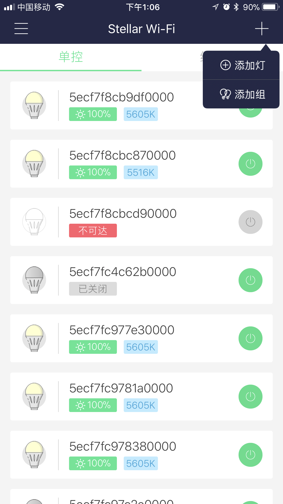
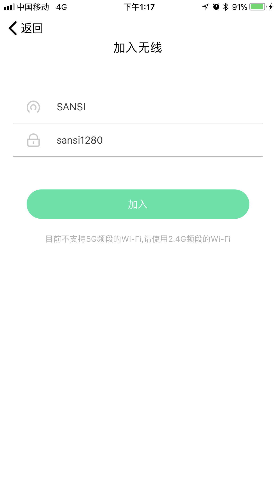
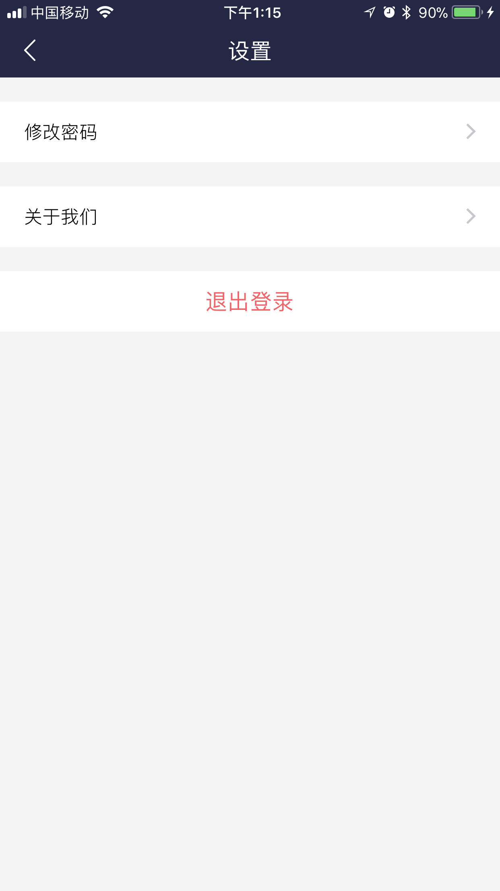

简介
Stellar Wi-Fi 应用无线控制三思智能球泡灯，开、关无级调节亮度，可选择自己喜欢的颜色。灯泡内置了8种预设场景。您还可以通过曲库中的歌曲与灯泡互动。
获取应用
iOS 用户在“App Store”中搜索并安装“Stellar Wi-Fi”。
安卓用户在Google Play、豌豆荚中搜索并安装“Stellar Wi-Fi”。
或扫描下方二维码，下载应用。

安装设备
将灯泡拧入灯座，打开电源开关。

iOS 操作简介
1. 注册账号


2. 将设备添加到目标WiFi

注：
全彩球泡灯网络名称类似 SLRGB*********
首次连接可能等待时间稍长
全彩球泡灯网络名称类似 SLRGB*********
首次连接可能等待时间稍长


注：
如果长时间都没有找到灯，请查看手机是否连接目标WiFi或以上步骤错误
如果长时间都没有找到灯，请查看手机是否连接目标WiFi或以上步骤错误
3. 功能使用操作
<1> 彩色球泡灯
<2>色温球泡灯：暂仅支持色温调控和倒计时开关


点击左上角的音乐选择按钮，选择喜欢的音乐，感受光随音乐而动的美。
场景模式为您提供了8种不同的场景模式，点击场景名选择不同场景，感受不同颜色不同频率的渐变。

注：
软件版本号 > 2，且灯所在WiFi和手机连接WiFi是同一个WiFi
软件版本号 > 2，且灯所在WiFi和手机连接WiFi是同一个WiFi

在设置界面中，灯可操作属性：
- 修改灯名称
- 倒计时开关
- 切换灯WiFi
- 是否允许远程控制
- 重置灯（提示：灯会恢复出厂设置）
- 灯的Mac地址
- 灯的类型
- 灯的软件版本
- 灯的硬件版本
左侧边栏

- 头像设置
- 昵称显示
- 在线帮助
- 关联亚马逊
- 账号及密码设置
1. 点击头像icon，进入个人信息界面，点击头像所在行设置头像，点击昵称所在行设置昵称

2. 点击设置，进入设置界面，重置密码和关于我们

3.（Alexa功能）
点击关联亚马逊进入配置亚马逊功能界面，实现语音控制灯
注：
App账号及密码是登录状态
亚马逊账号注册或登录
echo设备支持
组操作
点击右上角＋按钮，点击添加组输入组名，选择设备即可添加新的分组
注：
一个设备只能被添加到一个组中，如果选择别的组中的设备，则会将该设备从原有分组中移除
一个设备只能被添加到一个组中，如果选择别的组中的设备，则会将该设备从原有分组中移除

在操作界面中点击右上角编辑按钮进入编辑组界面，修改组的名字以及增删组中的设备。

android操作简介
登录
登录是指用户在登录模式下使用Stellar Wifi,在登录模式下，可以使用Alexa功能
- 注册
打开应用进入登录界面，如果您还没有注册，请点击注册账号按钮，跳至注册界面键入有效邮箱地址和密码进行注册,注册成功后返回登录界面进行登陆 - 登录
打开应用进入登陆界面，如果您已经有注册账号了，则输入用户名、密码，然后点击登录按钮进行登录即可
添加设备至Wifi
- 点击右上角的+按钮，再点添加灯按钮
- 确认灯是点亮的状态，然后点下一步按钮
- 进入设置导航界面，然后点连接WiFi按钮，进入手机无线网络设置界面,选择点击连接球泡灯wifi网络（全彩灯泡的网络名称“SLRG B******”）并确保连接成功
- 选择目标网络，设置密码，最后点击保存按钮，将灯加入目标网络，此操作可能需要1分钟左右，加入成功后返回主界面
- 当提示连接成功后，切换wifi，返回Stellar WiFi主界面，就能找到在列表中找到灯啦。(如果多次刷新列表都没有找到灯，请重新尝试上述步骤)
操作灯
点击列表任一灯泡进入控制界面,对灯进行色温，亮度，颜色以及场景的控制。
- 进入灯列表主界面
- 例如单控，点击列表任一灯泡进入控制界面。如果是彩色灯则显示彩色控制界面，如果是色温灯则显示色温控制界面，组控类似
- 场景模式（彩色灯特有）
场景模式为您提供了8种不同的场景模式，点击选择不同场景，感受不同颜色不同频率的渐变。 - 修改灯名称
点击右上角的图标进入到灯的设置界面，此时您可以修改灯的名称，获知灯的版本信息 - 加入其他Wifi网络
点击设置界面的无线网络进入加入Wifi网络界面，可以将此灯加入到其他wifi以便进行远程操控
左侧边栏
个人信息
- 确保在登录的状态下，点击侧边栏头像图标,进行个人信息的设置，否则会跳至登录界面
- 点击头像一栏，设置头像
- 点击昵称一栏，修改昵称
灯泡恢复出厂设置步骤
- 关闭灯泡电源，等待10秒。
- 将下列操作重复3次：
- 打开灯泡电源。
- 当灯泡亮起后，即刻关闭电源。
- 等待4秒。
- 第4次打开灯泡电源，等待30秒。
灯泡恢复出厂设置后，将依照下述顺序变化“红光渐变、绿光渐变、蓝光渐变最后停止为白光”(RGBW球泡灯)并进入Wi-Fi接入点模式。
运行环境需求
Stellar Wi-Fi应用可以在如下平台运行：
- 运行 iOS 8.0 及以上版本的 iOS 设备。
- 安卓4.2及以上机型。
您还需要一个或多个三思智能球泡灯。
联系我们
获取智能球泡灯产品的最新消息，请访问: http://www.sansitech.com；
需要技术支持，请联系: service@sansitech.us。